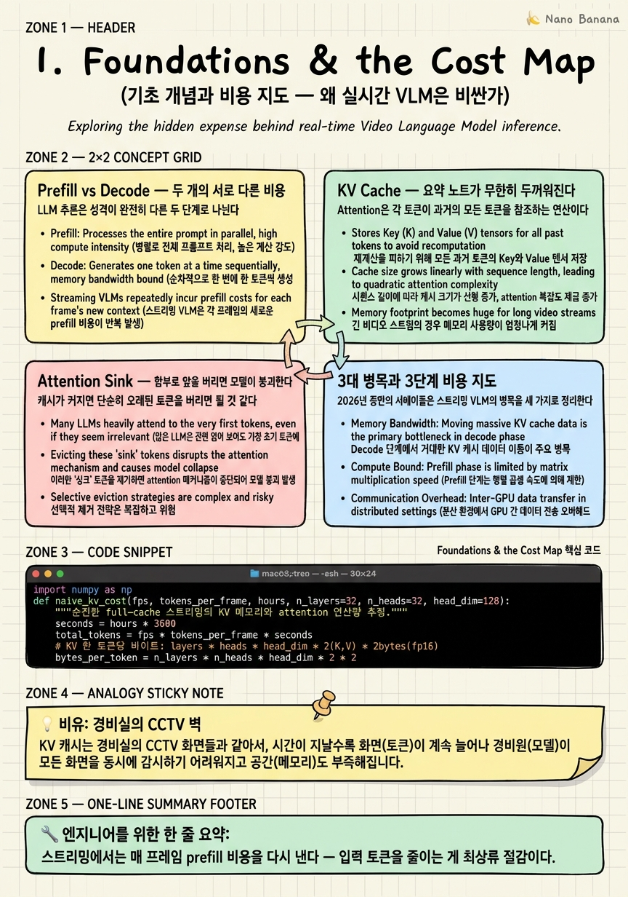

Foundations & the Cost Map

🎯 학습 목표
- Prefill과 Decode가 각각 어떤 비용을 만드는지 설명할 수 있다
- KV cache가 왜 스트리밍에서 선형으로 폭발하는지 계산할 수 있다
- Attention sink 현상과 그것이 캐시 절단을 어렵게 만드는 이유를 안다
- 실시간 VLM의 3대 병목(무한 KV·시간 컨텍스트 단절·파이프라인 동기화)을 구분한다
- 10편의 논문이 어느 단계의 비용을 깎는지 지도 위에 배치할 수 있다
이 코스는 하나의 실용적 목표를 축으로 삼는다 — 끝없이 흘러 들어오는 비디오에서 특정 이벤트를, 가능한 한 싼 비용으로, 실시간에 탐지하기. CCTV에서 "가방을 두고 떠나는 사람"을 잡거나, 공정 라인에서 "불량 동작"을 포착하거나, 라이브 방송에서 "특정 장면"을 순간 알림하는 문제들이 전부 여기에 속한다.
문제는 Vision-Language Model(VLM)이 본래 이런 무한 스트림을 염두에 두고 설계되지 않았다는 점이다. VLM은 "이미지 몇 장 + 질문"을 한 번에 받아 답하는 오프라인 구조에서 출발했다. 이것을 초당 수십 프레임이 영원히 들어오는 상황에 그대로 켜두면, 연산량과 메모리가 시간에 비례해 폭발한다. 1분은 되지만 1시간은 안 되고, 1시간은 되지만 하루는 안 된다.
그래서 이 챕터에서는 먼저 비용이 어디서 발생하는지를 정확히 짚는다. Prefill과 Decode의 차이, KV cache가 왜 커지는지, attention sink라는 이상한 현상까지 — 이 세 가지 기초가 잡히면 이후 10편의 논문이 전부 "이 병목 중 하나를 어떻게 깎았는가"로 깔끔하게 읽힌다. 마지막으로 전체 파이프라인을 3단계 비용 지도로 정리하고, 각 논문을 그 위에 배치한다.
핵심 내용
Prefill vs Decode — 두 개의 서로 다른 비용
LLM 추론은 성격이 완전히 다른 두 단계로 나뉜다. 이 구분을 모르면 "왜 비디오가 특히 비싼가"를 이해할 수 없다.
Prefill = 입력(프롬프트 + 비디오 토큰)을 한 번에 통째로 읽어 처리하는 단계.
Prefill은 모든 입력 토큰을 병렬로 처리하므로 GPU 연산량(FLOPs)이 크다. 입력이 길수록 오래 걸리고, 이것이 "첫 응답까지의 지연" 즉 TTFT(Time To First Token)를 결정한다. 사진 한 장은 순식간이지만, 프레임 수백 장을 쌓으면 prefill만으로 몇 초가 날아간다.
Decode = 답변 토큰을 하나씩 순차적으로 생성하는 단계.
Decode는 토큰 하나당 연산은 작지만, 매 토큰마다 과거 전체를 참조해야 하고 순차적이라 병렬화가 안 된다. 답변이 길수록 느려진다.
비디오 스트리밍의 본질적 문제가 여기서 드러난다. 프레임이 들어올 때마다 새로운 비주얼 토큰 수백 개가 입력에 추가되므로, prefill이 영원히 반복되는 상황이 된다. 오프라인 VLM은 prefill을 딱 한 번 내지만, 스트리밍 VLM은 매 프레임 prefill 비용을 다시 지불한다. 이 코스의 Stage ①(토큰 다이어트)은 바로 이 반복되는 prefill의 입력 크기를 줄이는 전략이다.
KV Cache — 요약 노트가 무한히 두꺼워진다
Attention은 각 토큰이 과거의 모든 토큰을 참조하는 연산이다. 새 토큰을 생성할 때마다 과거 전체의 Key/Value를 다시 계산하면 엄청난 낭비이므로, 한 번 계산한 각 토큰의 Key·Value 벡터를 저장해두고 재사용한다. 이것이 KV cache다.
비유하자면 시험을 볼 때 책을 매번 처음부터 다시 읽는 대신, 읽으면서 요약 노트를 쌓아두고 그 노트만 참조하는 것과 같다. 계산을 재활용하니 훨씬 빠르다.
문제는 이 노트가 토큰 수에 정비례해 선형으로 커진다는 것이다. 한 토큰의 KV는 (레이어 수 × 헤드 수 × 헤드 차원 × 2)만큼의 실수 값을 차지한다. 프레임당 토큰이 많은 비디오에서는 이게 순식간에 눈덩이가 된다.
\[\text{KV 메모리} \propto (\text{총 토큰 수}) = (\text{FPS}) \times (\text{프레임당 토큰}) \times (\text{시간})\]
예를 들어 1 FPS로 프레임당 196토큰을 넣으면 1시간에 약 70만 토큰이 쌓인다. 메모리가 폭발할 뿐 아니라, attention 연산 자체도 참조 대상이 많아져 함께 느려진다. 이 코스 Stage ②(기억 관리)의 논문들은 전부 "KV cache를 어떻게 시간과 무관한 고정 크기로 유지하느냐"라는 하나의 질문에 답한다.
Attention Sink — 함부로 앞을 버리면 모델이 붕괴한다
캐시가 커지면 단순히 오래된 토큰을 버리면 될 것 같다. 그런데 여기 반직관적인 함정이 있다. 맨 앞 토큰 몇 개를 버리면 모델의 출력이 통째로 무너진다.
이유는 Transformer가 attention 확률을 "어딘가에는 쏟아부어야" 하는 softmax 구조이기 때문이다. 딱히 참조할 곳이 없는 상황에서도 확률의 합은 1이어야 하므로, 모델은 남는 attention을 맨 앞 토큰들에 습관적으로 버린다. 이 "attention 쓰레기통" 역할을 하는 앞쪽 토큰들을 attention sink라 부른다(StreamingLLM, 2023의 발견).
따라서 sink 토큰을 버리면 모델은 attention을 쏟을 닻을 잃고 분포가 붕괴한다. StreamingLLM의 해법은 명료하다 — 맨 앞 sink 토큰 몇 개 + 최근 윈도우만 유지하고, 중간은 버린다. 앞과 뒤를 붙잡으면 무한 텍스트 스트림을 고정 캐시로 처리할 수 있다.
이 코스의 4장 StreamingVLM은 정확히 이 아이디어를 비디오로 확장한 논문이다. 그래서 지금 이 개념을 확실히 잡아두면 뒤가 편하다 — "sink는 남기고, 최근은 남기고, 중간 비전 토큰은 버린다"가 그 골격이다.
3대 병목과 3단계 비용 지도
2026년 중반의 서베이들은 스트리밍 VLM의 병목을 세 가지로 정리한다. 이 코스의 구조도 그 축을 따른다.
| 병목 | 증상 | 대응 단계 | |---|---|---| | 무한정 커지는 KV 캐시 | 메모리·attention 비용이 시간에 비례 폭발 | Stage ② 기억 관리 | | 시간적 컨텍스트 단절 | 과거를 버리면 장기 정보 소실 | Stage ② 기억 관리 | | 파이프라인 동기화 제약 | 답변 생성 중엔 새 프레임을 못 봄 | Stage ③ 트리거(비동기) |
이제 비용을 깎는 지점을 파이프라인 위에 3단계로 배치한다.
- Stage ① 토큰 다이어트 — 정보 없는 토큰을 LLM 입장 전에 잘라낸다. prefill·KV·attention이 동시에 줄어드는 최상류 절감점. (2장 TimeChat-Online, 3장 Dispider) - Stage ② 기억 관리 — KV cache를 시간과 무관한 상수 크기로 고정한다. (4장 StreamingVLM ~ 8장 Flash-VStream) - Stage ③ 트리거 — 무거운 LLM을 "언제 깨울지" 판단해 호출 자체를 줄인다. 이벤트 탐지의 본체. (9장 VideoLLM-Online, 10장 StreamMind·StreamBridge)
이 지도를 관통하는 두 원리를 기억하라. ① 정보가 없는 곳에 연산을 쓰지 마라 — 안 변한 패치, 뻔한 프레임, 침묵할 순간은 전부 헐값 처리한다. ② 무거운 모델은 드물게, 가벼운 모듈은 항상. 그리고 반복해서 등장할 공짜 신호 하나 — "압축이 안 되는 순간이 곧 이벤트다".
💡 비유로 이해하기
24시간 도는 CCTV 100대를 한 명의 경비원이 본다고 상상하자. 순진한 오프라인 VLM은 "매 순간 100개 화면 전체를 처음부터 끝까지 정독하는 경비원"이다. 몇 분은 버티지만 이내 지쳐 쓰러진다.
Prefill은 "새 장면이 뜰 때마다 그 화면을 다시 정독하는 행위"이고, KV cache는 "지금까지 본 것을 적어둔 수첩"이다. 수첩은 시간이 갈수록 두꺼워져 나중엔 넘겨보는 것만으로도 한나절이 걸린다. Attention sink는 "수첩 맨 앞 표지를 찢으면 경비원이 방향 감각을 잃고 헛것을 보기 시작하는" 기이한 습관이다.
이 코스가 만드는 유능한 경비원은 다르다. 바뀐 화면만 흘깃 보고(토큰 다이어트), 수첩은 늘 정해진 몇 장으로 요약해 유지하며(기억 관리), 진짜 이상한 일이 생긴 순간에만 상급자에게 보고한다(트리거). 평소엔 거의 힘을 쓰지 않다가 결정적 순간에만 집중하는 것 — 그게 비용 최적화의 전부다.
💻 코드 예시
말보다 숫자가 설득력 있다. 순진한 스트리밍이 왜 무너지는지, KV cache 증가를 직접 시뮬레이션해 보자.
import numpy as np
def naive_kv_cost(fps, tokens_per_frame, hours, n_layers=32, n_heads=32, head_dim=128):
"""순진한 full-cache 스트리밍의 KV 메모리와 attention 연산량 추정."""
seconds = hours * 3600
total_tokens = fps * tokens_per_frame * seconds
# KV 한 토큰당 바이트: layers * heads * head_dim * 2(K,V) * 2bytes(fp16)
bytes_per_token = n_layers * n_heads * head_dim * 2 * 2
kv_gb = total_tokens * bytes_per_token / 1e9
# 새 토큰 하나가 과거 전체를 참조 → 스텝당 O(N), 누적은 O(N^2)
attn_relative = total_tokens ** 2 / 1e12
return total_tokens, kv_gb, attn_relative
for hrs in [0.1, 1, 8]:
tok, gb, attn = naive_kv_cost(fps=1, tokens_per_frame=196, hours=hrs)
print(f"{hrs:>4}h tokens={tok:>10,} KV={gb:7.1f} GB attn~{attn:8.2f} (T-units)")
bytes_per_token이 KV cache의 핵심이다 — 토큰 하나가 레이어·헤드 전부에 걸쳐 K와 V를 저장하므로, 겉보기보다 훨씬 무겁다. 실행하면 1시간만 돌려도 KV가 수백 GB로 치솟아 단일 H100(80GB)을 한참 넘긴다. attn_relative가 \(N^2\)으로 커지는 것도 확인하라 — 메모리뿐 아니라 속도까지 함께 죽는다. 이 두 곡선을 평평하게 눌러 상수로 만드는 것이 Stage ②의 목표이고, 애초에 total_tokens의 증가율을 낮추는 것이 Stage ①이다.
🏭 현업에서의 평가
✅ 시니어가 보는 것
- prefill(연산 바운드, TTFT 결정)과 decode(메모리 대역폭 바운드, 순차) 비용 구조를 구분해 설명하는가
- KV cache 크기를 layers×heads×dim으로 산정하고 배포 용량을 상수로 계획할 수 있는가
- attention sink를 알고, 캐시 절단이 왜 순진하게는 안 되는지 설명하는가
⚠️ 레드 플래그
- "토큰만 줄이면 다 해결된다"며 KV cache 병목과 트리거 병목을 뭉뚱그림
- 실시간을 그냥 '작은 모델 쓰면 됨'으로 환원 — 스트림 길이에 따른 상태 폭발을 못 봄
- attention sink를 모른 채 '오래된 KV는 그냥 버리면 된다'고 단언
🎤 예상 인터뷰 질문
- 1시간짜리 라이브 스트림을 1 FPS로 처리할 때 full KV cache가 몇 GB가 되는지 어림해보라. 무엇이 먼저 터지는가?
- 슬라이딩 윈도우로 오래된 토큰을 버렸더니 출력이 붕괴했다. 원인과 최소 수정은?
- prefill 비용과 decode 비용을 각각 줄이려면 서로 다른 어떤 기법이 필요한가?
✨ 핵심 요약
Prefill은 반복된다
스트리밍에서는 매 프레임 prefill 비용을 다시 낸다 — 입력 토큰을 줄이는 게 최상류 절감이다.
KV는 선형 폭발
KV cache는 총 토큰 수에 비례해 커지고 attention은 O(N²)로 함께 느려진다.
Sink를 지켜라
맨 앞 attention sink 토큰을 버리면 모델이 붕괴한다 — 절단엔 규칙이 필요하다.
3대 병목
무한 KV · 시간 컨텍스트 단절 · 파이프라인 동기화가 스트리밍 VLM의 근본 제약이다.
3단계 지도
토큰 다이어트(①) → 기억 관리(②) → 트리거(③)로 비용을 직교적으로 깎는다.
두 원리
정보 없는 곳에 연산 쓰지 말고, 무거운 모델은 드물게 돌려라.
압축 실패 = 이벤트
안 눌리는 순간이 곧 변화의 순간 — 압축률 자체가 공짜 이벤트 신호가 된다.